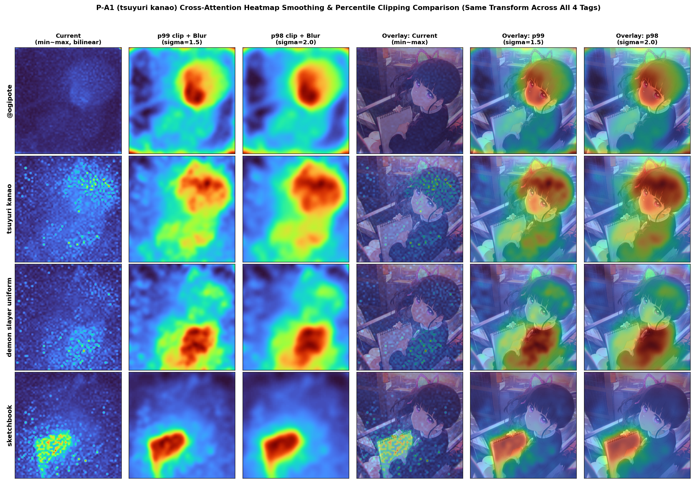
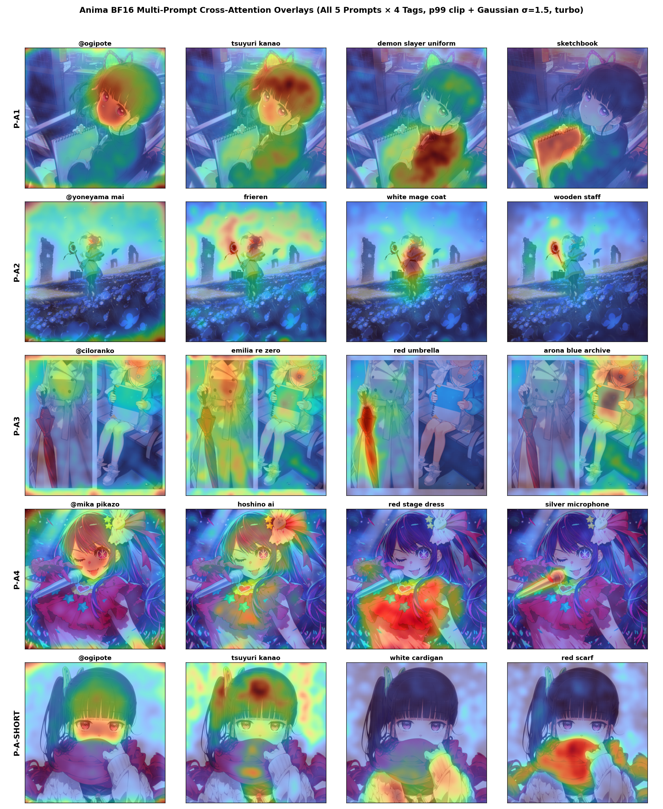
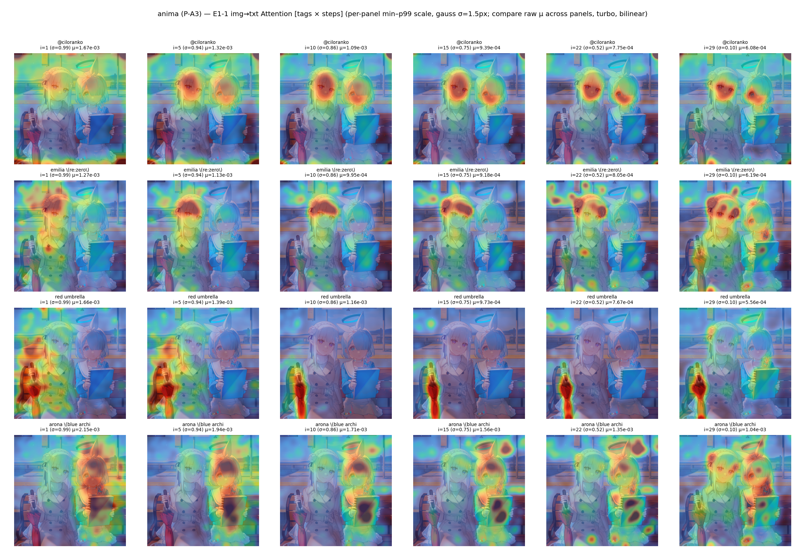
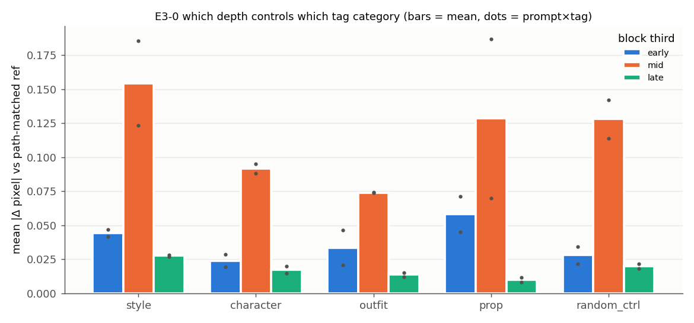
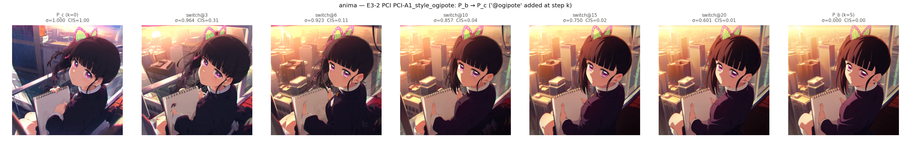
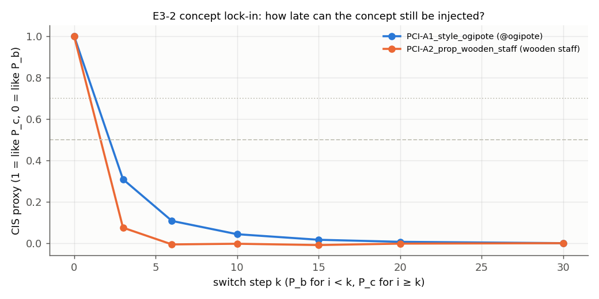
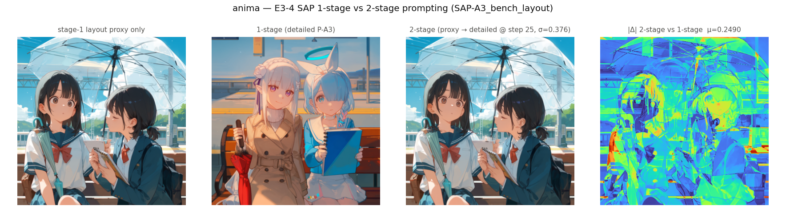
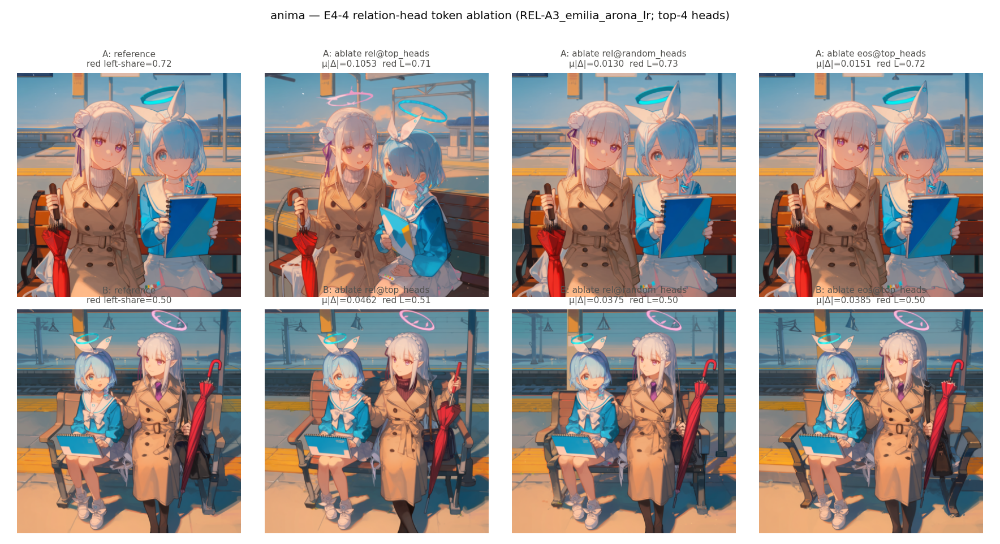

학습된 DiT의 프롬프트 반영 단계별 진단
Anima (BF16 · 28블록 Cross-Attention DiT)에서 태그가 그림이 되기까지의 과정을 공간 → 층 → 시간 → 헤드 순으로 추적합니다
1. 어느 위치에 닿나 (공간) → 2. 어느 블록에서 결정되나 (층 깊이) → 3. 몇 스텝에 굳나 (시간축) → 4. 어느 헤드가 좌/우를 가르나 (회로)
1단계. 공간 진단 — 각 태그가 해당 이미지 영역에 제대로 닿고 있나?
태그별 Cross-Attention 분포를 확인해, 프롬프트가 원하는 객체·화풍 위치에 매칭되는지 진단합니다
토큰 길이 편향 제거 (합산 → 평균)
모서리 극단값 압축 교정 (상위 99% 클리핑 · 스무딩)
진단: 소품·의상·캐릭터 정확 매칭 / 화풍은 얼굴+전반 분포



2단계. 블록 층 진단 — 28개 블록 중 어느 구간이 각 태그를 실제로 결정하나?
구도는 유지한 채 초·중·후반 블록 구간에서 특정 태그의 어텐션만 차단해, 어느 층이 해당 태그의 학습 결과를 담당하는지 진단합니다
진단: 중반 블록(9~18번)이 화풍·캐릭터·의상·소품 61~73% 담당
초반(0~8번) 보조 형성 · 후반(19~27번) 미세 디테일
LoRA·편집 시 핵심 타깃 층 = 9~18번 구간


3단계. 시간축 진단 — 30스텝 중 몇 번째 스텝에서 태그가 고정되나?
중간 스텝부터 태그를 주입하거나 프롬프트를 전환해, 어느 시점 이후에는 태그를 바꿔도 반영되지 않는지 진단합니다
진단: 국소 소품(지팡이)은 3스텝 만에 위치 고정
전역 화풍(@ogipote)은 6스텝까지 점진 반영 후 고정
초반 6스텝이 프롬프트 반영의 핵심 윈도우



4단계. 헤드 회로 진단 — 두 캐릭터의 좌/우 배치는 어느 헤드가 담당하나?
에밀리아(좌)·아로나(우)와 좌/우 반전 쌍을 비교해, 전체 헤드 중 공간 배치에 특화된 소수 헤드를 찾아 검증합니다
진단: 상위 4개 헤드가 좌/우 관계 전담 (무작위 헤드 대비 8.1배)
특정 헤드의 좌/우 토큰 기여만 제거해도 배치·속성 누수 발생
